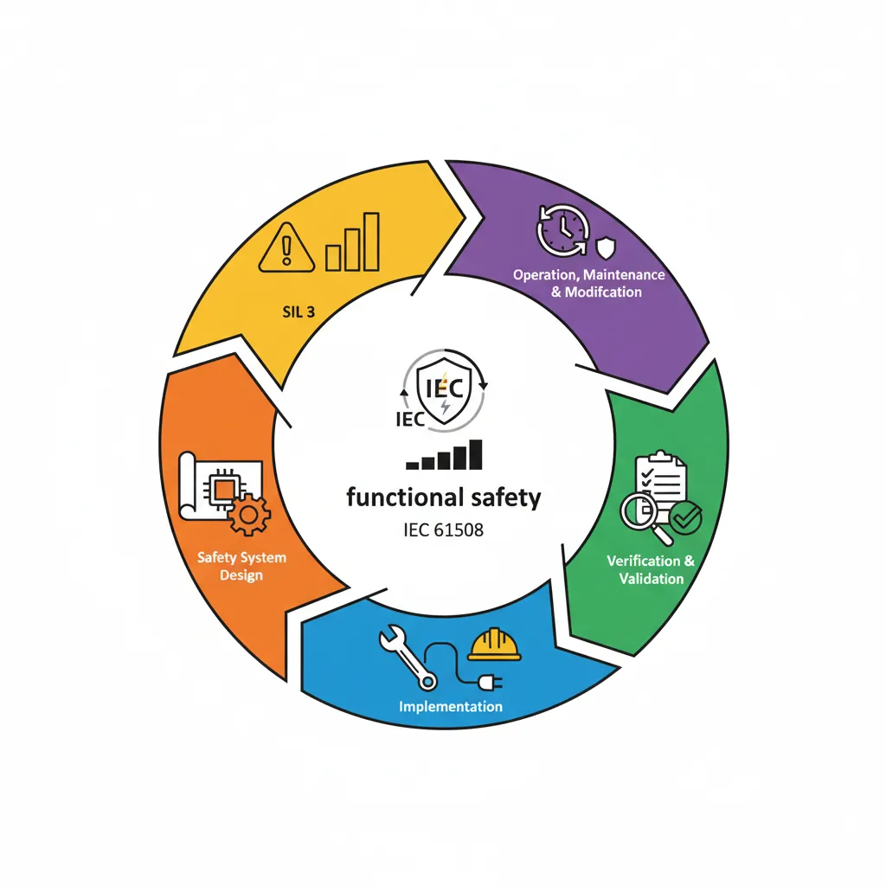
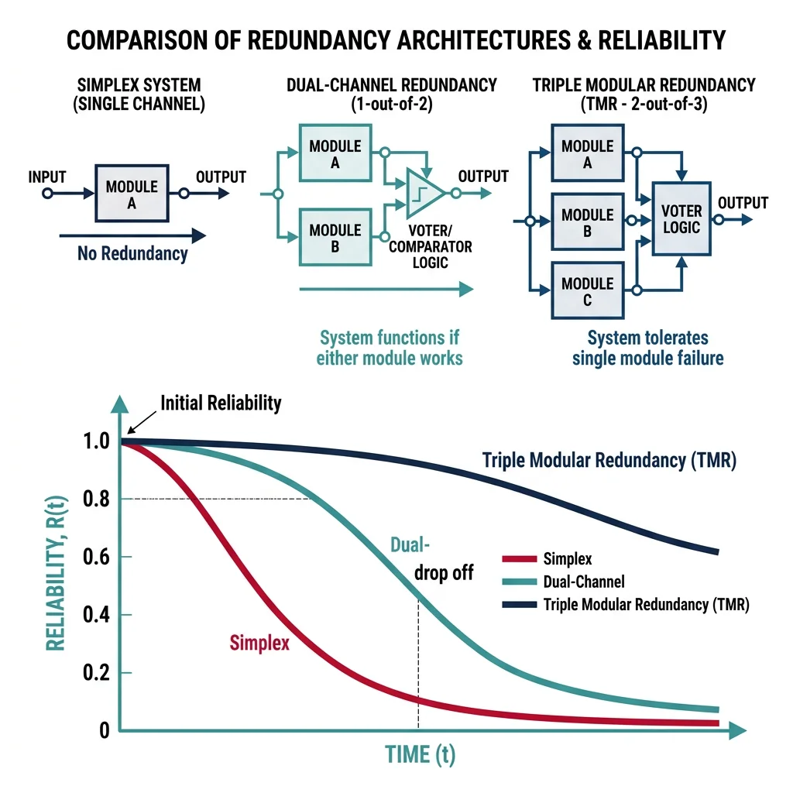
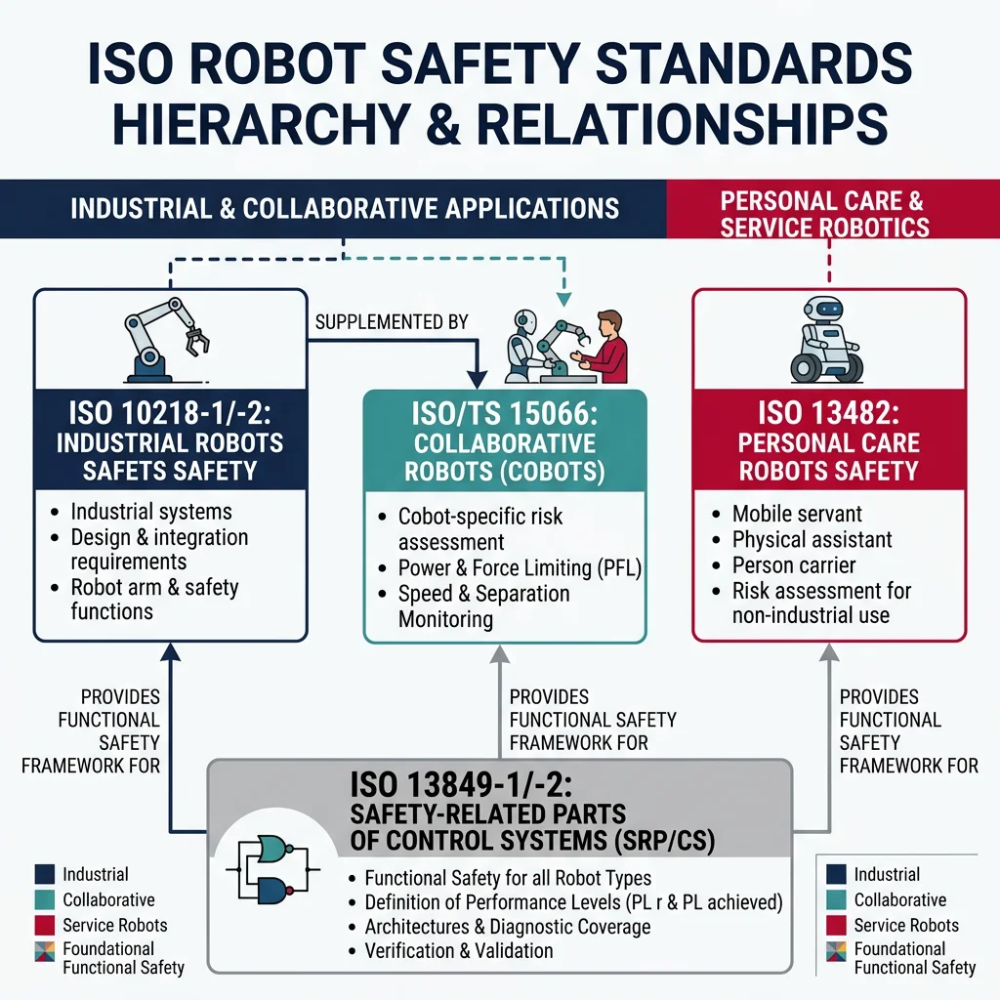
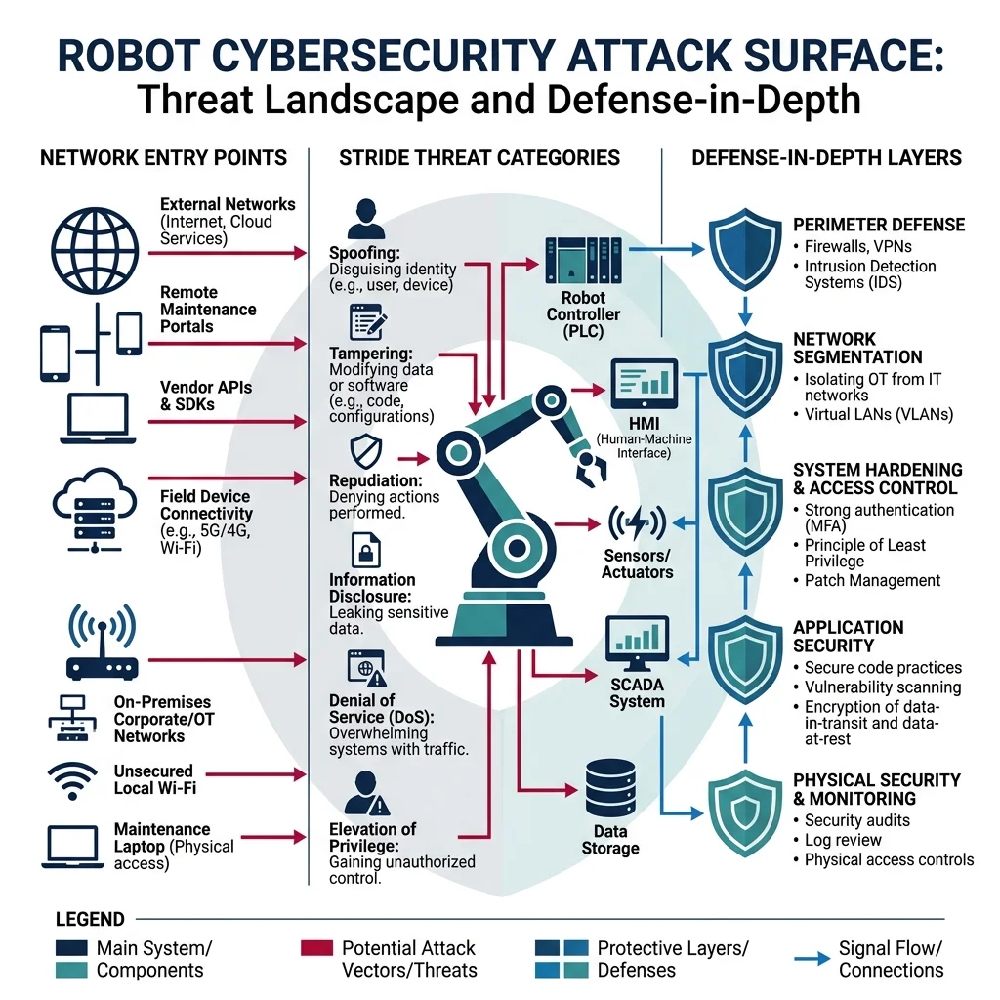
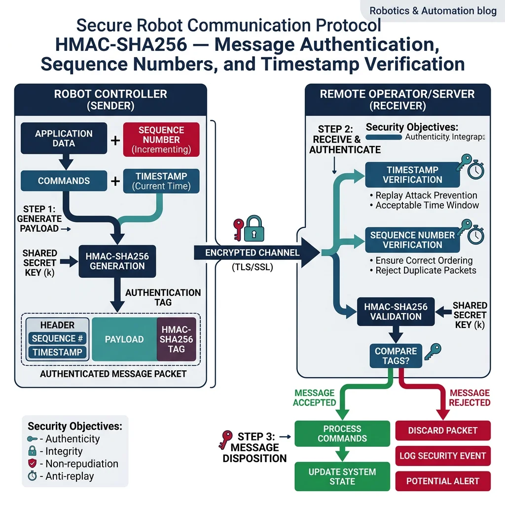

Functional Safety
Robotics & Automation Mastery
Introduction to Robotics
History, types, DOF, architectures, mechatronics, ethicsSensors & Perception Systems
Encoders, IMUs, LiDAR, cameras, sensor fusion, Kalman filters, SLAMActuators & Motion Control
DC/servo/stepper motors, hydraulics, drivers, gear systemsKinematics (Forward & Inverse)
DH parameters, transformations, Jacobians, workspace analysisDynamics & Robot Modeling
Newton-Euler, Lagrangian, inertia, friction, contact modelingControl Systems & PID
PID tuning, state-space, LQR, MPC, adaptive & robust controlEmbedded Systems & Microcontrollers
Arduino, STM32, RTOS, PWM, serial protocols, FPGARobot Operating Systems (ROS)
ROS2, nodes, topics, Gazebo, URDF, navigation stacksComputer Vision for Robotics
Calibration, stereo vision, object recognition, visual SLAMAI Integration & Autonomous Systems
ML, reinforcement learning, path planning, swarm roboticsHuman-Robot Interaction (HRI)
Cobots, gesture/voice control, safety standards, social roboticsIndustrial Robotics & Automation
PLC, SCADA, Industry 4.0, smart factories, digital twinsMobile Robotics
Wheeled/legged robots, autonomous vehicles, drones, marine roboticsSafety, Reliability & Compliance
Functional safety, redundancy, ISO standards, cybersecurityAdvanced & Emerging Robotics
Soft robotics, bio-inspired, surgical, space, nano-roboticsSystems Integration & Deployment
HW/SW co-design, testing, field deployment, lifecycleRobotics Business & Strategy
Startups, product-market fit, manufacturing, go-to-marketComplete Robotics System Project
Autonomous rover, pick-and-place arm, delivery robot, swarm simFunctional safety is the part of overall safety that depends on a system or equipment operating correctly in response to its inputs. Think of it like a car's airbag system — the airbag itself is a safety device, but functional safety ensures the electronic sensors, controller, and deployment mechanism work correctly when a collision actually happens. In robotics, functional safety means the robot will detect hazards and respond safely, even when components fail.

Safety Integrity Levels (SIL)
SIL levels range from 1 (lowest) to 4 (highest), each specifying a probability of dangerous failure per hour (PFH) for continuously operating systems:
| SIL Level | PFH (per hour) | Risk Reduction Factor | Example Application |
|---|---|---|---|
| SIL 1 | ≥10-6 to <10-5 | 10 — 100 | Conveyor emergency stop |
| SIL 2 | ≥10-7 to <10-6 | 100 — 1,000 | Robot cell safety interlock |
| SIL 3 | ≥10-8 to <10-7 | 1,000 — 10,000 | Surgical robot force limiter |
| SIL 4 | ≥10-9 to <10-8 | 10,000 — 100,000 | Nuclear handling robot |
Risk Assessment Process
Before assigning a SIL level, engineers conduct a risk assessment using a systematic process:
- Hazard Identification: List all conceivable hazards (collision, pinching, electrical shock, release of hazardous materials)
- Risk Estimation: Evaluate severity of harm, frequency of exposure, probability of hazardous event, and possibility of avoidance
- Risk Evaluation: Compare estimated risk against tolerable risk criteria
- Risk Reduction: Apply measures — inherent safe design, safeguarding, information for use — until residual risk is tolerable
import numpy as np
# SIL Assignment using Risk Graph Method (IEC 61508-5)
# Parameters: Consequence (C), Frequency (F), Probability (P), Avoidance (W)
def assign_sil_level(consequence, frequency, probability, avoidance):
"""
Simple SIL assignment based on risk parameters.
consequence: 1-4 (minor injury to multiple fatalities)
frequency: 1-2 (rare to frequent exposure)
probability: 1-2 (low to high probability of hazardous event)
avoidance: 1-2 (possible to impossible avoidance)
"""
risk_score = consequence + frequency + probability + avoidance
if risk_score <= 5:
return "No safety requirements"
elif risk_score <= 7:
return "SIL 1"
elif risk_score <= 9:
return "SIL 2"
elif risk_score <= 10:
return "SIL 3"
else:
return "SIL 4"
# Example: Industrial robot with human nearby
scenarios = [
{"name": "Conveyor speed monitor", "C": 1, "F": 2, "P": 1, "W": 1},
{"name": "Robot cell light curtain", "C": 3, "F": 2, "P": 1, "W": 2},
{"name": "Cobot force limiter", "C": 2, "F": 2, "P": 2, "W": 2},
{"name": "Surgical robot emergency stop", "C": 4, "F": 2, "P": 1, "W": 2},
]
print("SIL Level Assignment Results:")
print("-" * 55)
for s in scenarios:
sil = assign_sil_level(s["C"], s["F"], s["P"], s["W"])
score = s["C"] + s["F"] + s["P"] + s["W"]
print(f" {s['name']:30s} | Score: {score:2d} | {sil}")
FMEA & FMECA
Failure Mode and Effects Analysis (FMEA) is a systematic technique for identifying all the ways a component or process can fail, the effects of each failure, and prioritising them for corrective action. Think of it as a pre-mortem for your robot: instead of asking "what went wrong?" after a failure, you ask "what could go wrong?" before deployment.
Risk Priority Number (RPN)
FMEA uses the Risk Priority Number to prioritize failures:
$$RPN = Severity \times Occurrence \times Detection$$
Each factor is rated 1–10, giving RPNs from 1 to 1,000. Higher RPNs indicate higher-priority failure modes to address.
import numpy as np
# FMEA Analysis for a 6-DOF Industrial Robot Arm
# Each failure mode rated: Severity (1-10), Occurrence (1-10), Detection (1-10)
fmea_data = [
{"component": "Joint Encoder", "failure_mode": "Signal drift", "S": 7, "O": 4, "D": 3},
{"component": "Joint Encoder", "failure_mode": "Complete signal loss", "S": 9, "O": 2, "D": 2},
{"component": "Servo Motor", "failure_mode": "Overheating", "S": 6, "O": 5, "D": 4},
{"component": "Servo Motor", "failure_mode": "Winding short circuit", "S": 8, "O": 2, "D": 5},
{"component": "Gripper", "failure_mode": "Grip force loss", "S": 7, "O": 3, "D": 6},
{"component": "Safety Controller","failure_mode": "Watchdog timeout", "S": 9, "O": 1, "D": 2},
{"component": "Power Supply", "failure_mode": "Voltage sag", "S": 5, "O": 4, "D": 3},
{"component": "Communication Bus","failure_mode": "Packet loss above 10%", "S": 6, "O": 3, "D": 5},
]
print("FMEA Analysis for 6-DOF Robot Arm")
print("=" * 80)
print(f"{'Component':<20} {'Failure Mode':<25} {'S':>3} {'O':>3} {'D':>3} {'RPN':>5} {'Priority'}")
print("-" * 80)
for item in sorted(fmea_data, key=lambda x: x['S']*x['O']*x['D'], reverse=True):
rpn = item['S'] * item['O'] * item['D']
priority = "HIGH" if rpn > 100 else ("MEDIUM" if rpn > 50 else "LOW")
print(f" {item['component']:<20} {item['failure_mode']:<25} {item['S']:>3} {item['O']:>3} {item['D']:>3} {rpn:>5} {priority}")
high_risk = [i for i in fmea_data if i['S']*i['O']*i['D'] > 100]
print(f"\nHigh-Risk Items (RPN > 100): {len(high_risk)} of {len(fmea_data)}")
Fault Tree Analysis
Fault Tree Analysis (FTA) works top-down — you start with an undesired event (the "top event," like "robot collides with operator") and systematically decompose it into combinations of lower-level failures using logical gates (AND, OR). It's like asking "for this bad thing to happen, what combination of failures must occur?"
import numpy as np
# Fault Tree Analysis: Robot Collision with Operator
# Calculate top-event probability from basic event probabilities
# Basic events (probability of failure per mission)
p_sensor_fail = 0.001 # Proximity sensor fails to detect
p_controller_fail = 0.0005 # Safety controller logic error
p_brake_fail = 0.0002 # Emergency brake fails to engage
p_encoder_fail = 0.0008 # Position encoder gives wrong reading
p_comms_fail = 0.001 # Safety bus communication failure
# Gate calculations:
# Detection system fails = sensor_fail OR encoder_fail (OR gate)
p_detection_fail = 1 - (1 - p_sensor_fail) * (1 - p_encoder_fail)
# Dual-channel safety controller fails = controller AND comms (AND gate)
p_safety_logic_fail = p_controller_fail * p_comms_fail
# Stopping system fails = brake_fail (single point of failure)
p_stopping_fail = p_brake_fail
# Top event: Collision = Detection fails AND (Safety logic OR Stopping fails)
p_response_fail = 1 - (1 - p_safety_logic_fail) * (1 - p_stopping_fail)
p_collision = p_detection_fail * p_response_fail
print("Fault Tree Analysis: Robot-Operator Collision")
print("=" * 55)
print(f"Basic Events:")
print(f" Sensor failure: {p_sensor_fail:.4f}")
print(f" Encoder failure: {p_encoder_fail:.4f}")
print(f" Controller failure: {p_controller_fail:.4f}")
print(f" Communication failure: {p_comms_fail:.4f}")
print(f" Brake failure: {p_brake_fail:.4f}")
print(f"\nIntermediate Events:")
print(f" Detection fails (OR): {p_detection_fail:.6f}")
print(f" Safety logic fails (AND): {p_safety_logic_fail:.8f}")
print(f" Response fails (OR): {p_response_fail:.6f}")
print(f"\nTop Event:")
print(f" Collision probability: {p_collision:.10f}")
print(f" Approx. 1 in {int(1/p_collision):,} missions")
Case Study: KUKA Robot Safety System
KUKA's SafeOperation technology integrates safety directly into the robot controller. The system uses a dual-channel architecture (1oo2D — one-out-of-two with diagnostics) where safety functions run on two independent processors that cross-check each other every millisecond. Key safety functions include:
- Safe Speed Monitoring: Ensures joint velocities stay below configured limits (SLS — Safely Limited Speed)
- Safe Operating Space: Virtual fences define allowed workspace envelopes — the robot stops if any joint moves beyond boundaries
- Safe Torque Off (STO): Removes motor power while maintaining brake engagement — meets IEC 61800-5-2 requirements
- Dual-Checksum Firmware: Both safety channels verify firmware integrity at startup using CRC-32 checks
This architecture achieves PL d (Performance Level d) per ISO 13849-1 and SIL 2 per IEC 62061, making KUKA robots suitable for collaborative applications with appropriate risk assessments.
Redundancy & Fault Tolerance
Redundancy means having backup components or pathways so that a single failure doesn't cause a dangerous situation. Think of it like a building with both a staircase and an elevator — if one is out of service, the other still provides safe egress. In safety-critical robotics, redundancy is often mandatory to achieve the required SIL level.

Hardware Redundancy Architectures
| Architecture | Notation | Description | Pros/Cons |
|---|---|---|---|
| Simplex | 1oo1 | Single channel, no redundancy | Cheap; single point of failure |
| Dual | 1oo2 | Two channels, either can trigger safety action | High availability; may cause nuisance trips |
| Dual with Diagnostics | 1oo2D | Two channels with cross-monitoring | Most common in robotics; detects discrepancies |
| Triple Modular | 2oo3 | Three channels, majority vote decides | Tolerates one failure; expensive, high availability |
import numpy as np
# Reliability Comparison of Redundancy Architectures
# Using exponential reliability model: R(t) = e^(-lambda * t)
def reliability_simplex(lam, t):
"""1oo1: fails if single channel fails."""
return np.exp(-lam * t)
def reliability_dual(lam, t):
"""1oo2: fails only if BOTH channels fail."""
r = np.exp(-lam * t)
return 1 - (1 - r)**2
def reliability_tmr(lam, t):
"""2oo3: fails if 2 or more of 3 channels fail."""
r = np.exp(-lam * t)
return 3 * r**2 - 2 * r**3
# Parameters
failure_rate = 1e-5 # failures per hour per channel
mission_hours = np.array([1000, 5000, 10000, 20000, 50000])
print("Redundancy Architecture Reliability Comparison")
print(f"Channel failure rate: {failure_rate:.1e} failures/hour")
print("=" * 65)
print(f"{'Hours':>8} {'Simplex':>12} {'Dual (1oo2)':>12} {'TMR (2oo3)':>12}")
print("-" * 65)
for t in mission_hours:
r1 = reliability_simplex(failure_rate, t)
r2 = reliability_dual(failure_rate, t)
r3 = reliability_tmr(failure_rate, t)
print(f"{t:>8,} {r1:>12.8f} {r2:>12.8f} {r3:>12.8f}")
print(f"\nAt 20,000 hours:")
print(f" Simplex: {(1-reliability_simplex(failure_rate, 20000))*1e6:.0f} failures/million")
print(f" Dual: {(1-reliability_dual(failure_rate, 20000))*1e6:.0f} failures/million")
print(f" TMR: {(1-reliability_tmr(failure_rate, 20000))*1e6:.0f} failures/million")
Software Redundancy
While hardware redundancy protects against physical failures, software redundancy guards against bugs, timing issues, and logical errors. Since identical software on redundant channels would have the same bug, software redundancy uses diverse programming — different teams, languages, or algorithms implement the same safety function.
N-Version Programming Pattern
import numpy as np
# N-Version Programming: Two independent safe distance implementations
# Version A: Geometric bounding-sphere approach
# Version B: Manhattan distance with rectangular envelope (diverse algorithm)
def safe_distance_v1(robot_pos, human_pos, robot_radius=0.3, safety_margin=0.5):
"""Version A: Euclidean distance with bounding sphere."""
distance = np.linalg.norm(np.array(robot_pos) - np.array(human_pos))
safe_dist = robot_radius + safety_margin
return distance > safe_dist, distance
def safe_distance_v2(robot_pos, human_pos, robot_envelope=0.35, min_clearance=0.45):
"""Version B: Closest-axis approach with rectangular envelope."""
diff = np.abs(np.array(robot_pos) - np.array(human_pos))
min_axis_dist = np.min(diff)
safe_dist = robot_envelope + min_clearance
return min_axis_dist > safe_dist, min_axis_dist
def safety_voter(robot_pos, human_pos):
"""Conservative voter: if EITHER version says unsafe, trigger stop."""
safe_a, dist_a = safe_distance_v1(robot_pos, human_pos)
safe_b, dist_b = safe_distance_v2(robot_pos, human_pos)
# 1oo2 voting for safety — either can trigger stop
is_safe = safe_a and safe_b
if safe_a != safe_b:
print(f" DISAGREEMENT: V1={'SAFE' if safe_a else 'STOP'}, V2={'SAFE' if safe_b else 'STOP'}")
print(f" Conservative action: STOP")
return is_safe
# Test scenarios
scenarios = [
{"robot": [1.0, 0.0, 0.5], "human": [2.5, 0.0, 0.5], "desc": "Human 1.5m away"},
{"robot": [1.0, 0.0, 0.5], "human": [1.6, 0.2, 0.5], "desc": "Human 0.6m away"},
{"robot": [1.0, 0.0, 0.5], "human": [1.2, 0.1, 0.5], "desc": "Human very close"},
]
print("N-Version Safety Voter Results:")
print("=" * 50)
for s in scenarios:
result = safety_voter(s["robot"], s["human"])
print(f" {s['desc']:25s} -> {'SAFE' if result else 'STOP'}")
Watchdogs & Heartbeats
A watchdog timer is a hardware or software mechanism that detects when the main program has hung, crashed, or entered an infinite loop. It's like a dead man's switch on a train — the engineer must periodically press a button to prove they're conscious. If the button isn't pressed within the timeout, the train automatically brakes.
import time
import threading
class WatchdogTimer:
"""
Software watchdog timer for safety-critical robot control loops.
If the control loop doesn't 'kick' the watchdog within the timeout,
the safety callback is triggered (e.g., emergency stop).
"""
def __init__(self, timeout_ms, safety_callback, name="Watchdog"):
self.timeout = timeout_ms / 1000.0
self.callback = safety_callback
self.name = name
self.last_kick = time.time()
self.running = False
def start(self):
self.running = True
self.last_kick = time.time()
self._thread = threading.Thread(target=self._monitor, daemon=True)
self._thread.start()
print(f"[{self.name}] Started with timeout: {self.timeout*1000:.0f}ms")
def kick(self):
"""Reset the watchdog. Call from your control loop each cycle."""
self.last_kick = time.time()
def stop(self):
self.running = False
print(f"[{self.name}] Stopped")
def _monitor(self):
while self.running:
elapsed = time.time() - self.last_kick
if elapsed > self.timeout:
print(f"[{self.name}] TIMEOUT ({elapsed*1000:.0f}ms) -> safety action!")
self.callback()
self.running = False
return
time.sleep(self.timeout / 10)
# Example usage
def emergency_stop():
print("EMERGENCY STOP: Motors disabled, brakes engaged")
wd = WatchdogTimer(timeout_ms=100, safety_callback=emergency_stop, name="ControlLoop-WD")
print("Watchdog Timer Summary:")
print(f" Normal: control loop kicks every 20ms (within 100ms timeout)")
print(f" Failure: if loop hangs -> watchdog triggers emergency stop")
print(f" Typical rates: 1-10kHz (0.1-1ms cycle time)")
on_deactivate and on_error transitions.
Case Study: Waymo's Multi-Layer Safety Architecture
Waymo's autonomous driving system employs a defence-in-depth redundancy strategy with multiple independent safety layers:
- Primary Compute: Main planning computer runs the ML-based driving stack on custom TPUs
- Secondary Compute: Independent safety controller runs rule-based collision avoidance — can override primary decisions
- Tertiary Hardware: Hardwired minimum-risk condition module triggers mechanical braking if both computers fail
- Sensor Redundancy: 29 cameras, 6 LiDARs, 6 radars — no single sensor failure blinds the system
- Dual Steering/Braking: Independent actuators ensure controllability with one actuator offline
Each layer operates independently — a failure in the primary compute triggers fallback to the secondary, and a failure in both triggers the hardwired minimum-risk stop. Estimated MTBF for the complete system exceeds 10 million miles.
ISO Standards & Certification
International standards provide a shared framework for robot safety, ensuring that robots built in one country can be certified and deployed globally. Think of standards like a contract between manufacturers and users — they define the minimum safety requirements everyone agrees to follow.

ISO 10218 — Industrial Robots
The foundational standard for industrial robot safety, published in two parts:
| Standard | Scope | Key Requirements |
|---|---|---|
| ISO 10218-1 | Robot manufacturers | Emergency stop category 0/1, speed/force limits, protective stop, axis limits |
| ISO 10218-2 | System integrators | Risk assessment, safeguarding design, layout planning, validation & verification |
ISO 10218-2 defines four collaborative operation modes for robots sharing workspace with humans:
- Safety-rated monitored stop: Robot stops when human enters collaborative workspace
- Hand guiding: Human physically guides the robot (reduced speed, force sensing)
- Speed and separation monitoring: Robot adjusts speed based on distance to nearest person
- Power and force limiting: Robot limits contact forces below pain/injury thresholds
ISO 13482 — Personal Care Robots
As robots move from factories into homes and hospitals, ISO 13482 addresses the unique challenges of personal care robots interacting with untrained users. It covers three categories:
- Mobile servant robots: Service robots that navigate homes (cleaning, delivery)
- Physical assistant robots: Exoskeletons and mobility aids worn by humans
- Person carrier robots: Autonomous wheelchairs and personal transporters
ISO/TS 15066 — Collaborative Robots
ISO/TS 15066 is the technical specification that provides detailed guidance for power and force limiting in collaborative robot applications. It defines the actual biomechanical force/pressure thresholds for different body regions.
import numpy as np
# ISO/TS 15066 Biomechanical Limits: Force/Pressure Compliance Check
# Body region limits for Power and Force Limiting (PFL) mode
body_limits = {
"Skull/Forehead": {"F_transient": 130, "F_static": 65, "P_static": 5.0},
"Face": {"F_transient": 65, "F_static": 45, "P_static": 1.8},
"Chest": {"F_transient": 140, "F_static": 100, "P_static": 2.8},
"Upper arm": {"F_transient": 150, "F_static": 110, "P_static": 3.6},
"Forearm": {"F_transient": 160, "F_static": 120, "P_static": 4.0},
"Hand/Finger": {"F_transient": 140, "F_static": 95, "P_static": 2.0},
"Lower leg": {"F_transient": 220, "F_static": 160, "P_static": 4.4},
}
# Simulated robot contact scenario
robot_mass = 5.0 # kg (effective mass at contact point)
robot_speed = 0.25 # m/s (collaborative speed)
contact_area = 0.001 # m^2 (1 cm^2 contact patch)
# Transient contact force via energy method
spring_constant = 75000 # N/m (typical soft covering)
delta = robot_speed * np.sqrt(robot_mass / spring_constant)
F_impact = spring_constant * delta
print("ISO/TS 15066 Compliance Check")
print(f"Robot mass: {robot_mass} kg, Speed: {robot_speed} m/s")
print(f"Estimated impact force: {F_impact:.1f} N")
print("=" * 60)
print(f"{'Body Region':<20} {'Limit (N)':>10} {'Actual (N)':>10} {'Status':>10}")
print("-" * 60)
for region, limits in body_limits.items():
compliant = F_impact <= limits["F_transient"]
status = "PASS" if compliant else "FAIL"
print(f" {region:<20} {limits['F_transient']:>10} {F_impact:>10.1f} {status:>10}")
CE Marking & Compliance Pathways
CE marking is a mandatory conformity mark for products sold in the European Economic Area (EEA). For robotic systems, CE marking requires demonstrating compliance with the Machinery Directive (2006/42/EC) and applicable harmonised standards. Think of it as a passport — without CE marking, your robot cannot legally enter the European market.
Compliance Pathway Overview
- Identify applicable directives: Machinery Directive, Low Voltage Directive (2014/35/EU), EMC Directive (2014/30/EU), Radio Equipment Directive (2014/53/EU)
- Risk assessment: Following ISO 12100 methodology
- Apply harmonised standards: ISO 10218, ISO 13849, IEC 62061, etc.
- Prepare technical documentation: Design drawings, risk assessment, test reports, calculation notes
- Declaration of Conformity: Manufacturer's legally binding declaration
- Affix CE mark: Visible, legible, indelible marking on the product
Case Study: Universal Robots UR10e — CE Certification
Universal Robots' UR10e cobot achieved CE marking through a comprehensive certification process, validated by TUV NORD:
- Risk Assessment: Full ISO 12100 risk assessment covering all identified hazards across 38 use-case scenarios
- Performance Level: Safety functions certified to PL d, Category 3 per ISO 13849-1
- ISO/TS 15066 Compliance: Force/pressure values tested for all 29 body regions at rated payload (12.5 kg)
- EMC Testing: Passed emission (EN 61000-6-4) and immunity (EN 61000-6-2) requirements
- Documentation: 200+ page technical file including FMEA, circuit diagrams, and validation protocols
The certification allows system integrators to use the UR10e as a certified machine component — they still must perform a site-specific risk assessment per ISO 10218-2.
Cybersecurity for Robotics
As robots become networked and connected to cloud services, they become targets for cyberattacks. A compromised robot isn't just an IT problem — it's a physical safety hazard. An attacker who gains control of a 200kg industrial robot arm can cause serious injury or death.

Threat Modeling with STRIDE
| Threat | Description | Robot Example |
|---|---|---|
| Spoofing | Impersonating a trusted entity | Fake sensor data injection into LiDAR feed |
| Tampering | Modifying data or code | Altering robot trajectory waypoints in transit |
| Repudiation | Denying an action occurred | No audit log of who modified safety parameters |
| Info Disclosure | Exposing confidential data | Leaking proprietary manufacturing processes |
| Denial of Service | Making system unavailable | Flooding ROS 2 DDS network with garbage topics |
| Privilege Elevation | Gaining unauthorized access | Operator gains engineer-level safety override |
Secure Communication Protocols
Robot communication channels must be secured against eavesdropping, tampering, and replay attacks. The challenge is that real-time robot control requires low latency — traditional TLS handshakes may be too slow for microsecond-level control loops.

import hashlib
import hmac
import struct
import time
class SecureRobotMessage:
"""
Lightweight authenticated message format for robot control.
Uses HMAC-SHA256 for integrity + sequence numbers for replay protection.
"""
def __init__(self, shared_key):
self.key = shared_key.encode('utf-8')
self.sequence = 0
self.last_seen_seq = -1
def create_message(self, command, joint_positions):
"""Create an authenticated control message."""
self.sequence += 1
timestamp = int(time.time() * 1000)
# Pack: sequence(4B) + timestamp(8B) + command(1B) + 6 joints(48B)
payload = struct.pack('<IqB6d',
self.sequence, timestamp, command, *joint_positions
)
# HMAC for authentication and integrity
mac = hmac.new(self.key, payload, hashlib.sha256).digest()[:16]
return payload + mac # 61B payload + 16B MAC = 77 bytes total
def verify_message(self, raw_message):
"""Verify received message integrity, replay, and freshness."""
payload = raw_message[:-16]
received_mac = raw_message[-16:]
# Verify HMAC
expected_mac = hmac.new(self.key, payload, hashlib.sha256).digest()[:16]
if not hmac.compare_digest(received_mac, expected_mac):
return None, "INTEGRITY_FAILURE"
seq, ts, cmd = struct.unpack('<IqB', payload[:13])
joints = struct.unpack('<6d', payload[13:])
# Replay protection
if seq <= self.last_seen_seq:
return None, f"REPLAY_ATTACK (seq {seq})"
# Freshness check (reject messages older than 500ms)
age = int(time.time() * 1000) - ts
if age > 500:
return None, f"STALE_MESSAGE ({age}ms)"
self.last_seen_seq = seq
return {"seq": seq, "cmd": cmd, "joints": joints}, "OK"
# Demo
secure = SecureRobotMessage("robot-secret-key-2026")
joints = [0.0, -1.57, 1.57, 0.0, 1.57, 0.0]
msg = secure.create_message(command=1, joint_positions=joints)
print(f"Secure message size: {len(msg)} bytes")
print(f"HMAC overhead: 16 bytes ({16/len(msg)*100:.1f}%)")
print(f"Suitable for 1kHz control: {'Yes' if len(msg) < 256 else 'No'}")
ros2 security create_keystore and the ROS_SECURITY_ENABLE environment variable.
OTA Updates & System Hardening
Over-the-Air (OTA) updates allow robot software to be patched remotely — critical for fixing security vulnerabilities post-deployment. However, OTA updates themselves are an attack vector if not properly secured.
import hashlib
class SecureOTAManager:
"""
Secure OTA update manager for robotic fleet.
Implements: code signing, rollback protection, A/B partitioning.
"""
def __init__(self, robot_id, current_version):
self.robot_id = robot_id
self.current_version = current_version
self.rollback_version = None
self.active_partition = 'A'
def verify_update(self, firmware_bytes, signature, min_version):
"""Verify firmware integrity and version constraints."""
checks = {}
fw_hash = hashlib.sha256(firmware_bytes).hexdigest()
checks['integrity'] = fw_hash == signature
checks['version_ok'] = min_version >= self.current_version
checks['size_ok'] = len(firmware_bytes) <= 64 * 1024 * 1024 # 64 MB
return all(checks.values()), checks
def apply_update(self, new_version):
"""Apply update using A/B partition scheme."""
inactive = 'B' if self.active_partition == 'A' else 'A'
print(f" Writing v{new_version} to partition {inactive}")
self.rollback_version = self.current_version
self.current_version = new_version
self.active_partition = inactive
print(f" Active: {inactive} (v{new_version})")
print(f" Rollback: v{self.rollback_version}")
# Example
ota = SecureOTAManager("ROBOT-042", current_version="2.3.1")
print(f"Robot {ota.robot_id} — Current: v{ota.current_version}")
fake_fw = b"robot_firmware_v2.4.0_binary"
fake_sig = hashlib.sha256(fake_fw).hexdigest()
passed, checks = ota.verify_update(fake_fw, fake_sig, "2.4.0")
print(f"\nVerification: {'PASSED' if passed else 'FAILED'}")
for check, result in checks.items():
print(f" {check}: {'OK' if result else 'FAIL'}")
if passed:
ota.apply_update("2.4.0")
- Disable unused ports: Close SSH, Telnet, HTTP ports not required for operation
- Least privilege: Robot control software runs as non-root with minimal permissions
- Immutable root filesystem: Read-only OS partitions with tmpfs for temporary data
- Secure boot chain: TPM 2.0 root-of-trust verifies bootloader, kernel, and application
- Network segmentation: Robot control network isolated from corporate IT via industrial firewalls
- Audit logging: All safety parameter changes logged with operator identity and timestamp
- Certificate rotation: TLS certificates rotated every 90 days minimum
Case Study: ABB RobotStudio — IEC 62443 Cybersecurity
ABB's approach to robot cybersecurity follows IEC 62443, implementing defence-in-depth across four zones:
- Zone 1 — Enterprise Network: Standard IT security (firewalls, IDS/IPS, SIEM)
- Zone 2 — DMZ: Data diodes and application-layer gateways between IT and OT
- Zone 3 — Plant Network: Industrial switches with VLAN segmentation, protocol whitelisting
- Zone 4 — Robot Cell: Encrypted comms, certificate-based auth, physical key switches
ABB's IRC5 controller implements Security Level 2 (SL-2) per IEC 62443-3-3. Critical safety functions run on a physically separate safety CPU that cannot be accessed from any network interface.
Safety Assessment Planner Tool
Use this interactive tool to plan and document your robot safety assessment. Fill in the details below and download your safety plan as Word, Excel, or PDF:
Robot Safety Assessment Planner
Plan your safety assessment covering hazard identification, SIL assignment, standards compliance, and cybersecurity measures. Download as Word, Excel, or PDF.
All data stays in your browser. Nothing is sent to or stored on any server.
Exercises & Challenges
Exercise 1: FMEA for a Delivery Robot
A last-mile delivery robot navigates sidewalks and crosses streets. Perform a complete FMEA:
- Identify at least 8 failure modes across sensors (LiDAR, camera, GPS), actuators (wheel motors, steering), and computing (CPU, communication).
- Rate each failure mode for Severity, Occurrence, and Detection (1-10 scale).
- Calculate RPN for each and identify the top 3 highest-risk failure modes.
- Propose corrective actions and re-calculate the revised RPN.
Bonus: Build a fault tree for "Robot enters roadway without stopping for traffic."
Exercise 2: Force/Pressure Compliance Calculator
Create a Python programme that checks ISO/TS 15066 compliance for a collaborative robot:
- Input: robot effective mass, speed, contact area, and target body region.
- Calculate transient impact force using the Hertz contact model.
- Look up the biomechanical limit from the ISO/TS 15066 table.
- Output PASS/FAIL for transient force, quasi-static force, and pressure limits.
- If FAIL, calculate the maximum safe speed for that body region.
Exercise 3: Cybersecurity Threat Model
Apply the STRIDE framework to a ROS 2-based mobile robot with cloud connectivity:
- Draw a data flow diagram: sensors to ROS 2 nodes to cloud API to fleet dashboard.
- Identify at least one threat per STRIDE category for each data flow.
- Rate each threat using DREAD scoring.
- Propose countermeasures: SROS2, network segmentation, secure OTA updates.
- Write a 1-page security policy document for your robot.
Conclusion & Next Steps
Safety, reliability, and compliance are not checkboxes to tick at the end of a project — they are integral engineering disciplines that must be woven into every phase of robot development. From risk assessment through functional safety analysis, redundancy design, standards compliance, and cybersecurity hardening, each layer works together to ensure robots operate safely alongside humans.
- Functional Safety: SIL levels quantify how reliably safety functions must perform; FMEA and FTA systematically identify and analyse failure modes
- Redundancy: Hardware (1oo2, 2oo3) and software (N-version programming) redundancy are essential for achieving higher SIL levels
- Standards: ISO 10218, ISO 13482, and ISO/TS 15066 provide the global framework for robot safety certification
- Cybersecurity: Networked robots require threat modeling, secure communications, OTA security, and system hardening
Next in the Series
In Part 15: Advanced & Emerging Robotics, we'll explore the cutting edge — soft robotics, bio-inspired systems, surgical robots, space robotics, and nano-robotics.